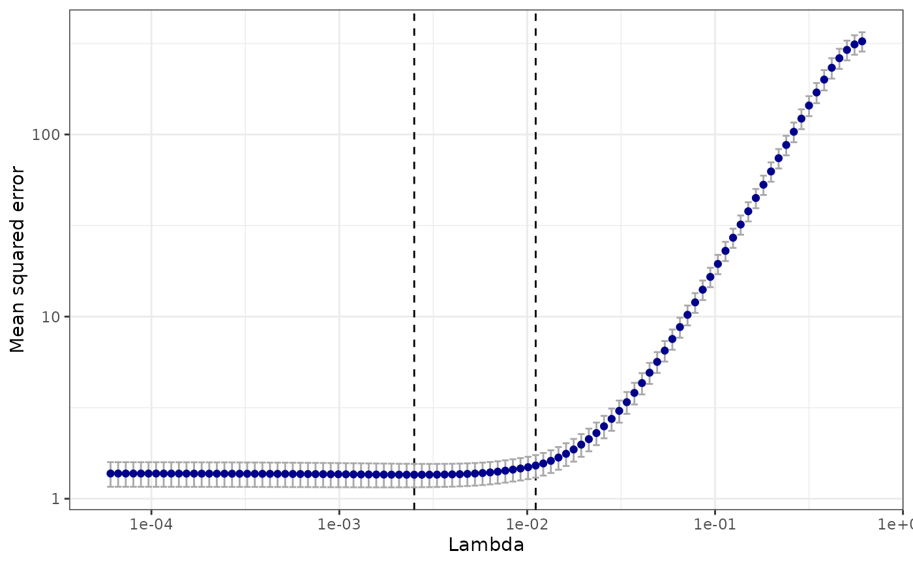

cv.sparsegl object.plot.cv.sparsegl.RdPlots the cross-validation curve, and upper and lower standard deviation
curves, as a function of the lambda values used. This function is
modified based on the plot.cv function from the glmnet::plot.cv.glmnet()
package.
# S3 method for cv.sparsegl plot(x, sign.lambda = 1, ...)
| x | Fitted |
|---|---|
| sign.lambda | Either plot against |
| ... | Not used. |
A plot is produced.
n <- 100 p <- 20 X <- matrix(rnorm(n * p), nrow = n) eps <- rnorm(n) beta_star <- c(rep(5, 5), c(5, -5, 2, 0, 0), rep(-5, 5), rep(0, (p - 15))) y <- X %*% beta_star + eps groups <- rep(1:(p / 5), each = 5) cv_fit <- cv.sparsegl(X, y, groups) plot(cv_fit)